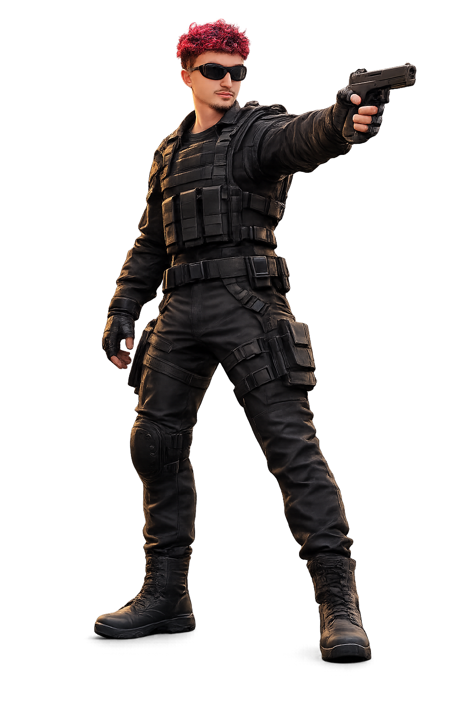

Uma arena viva
A floresta se estende por um mapa amplo. A câmera acompanha o personagem, mantendo a ação centrada nele enquanto você se movimenta.
Uma mistura de sobrevivência contra hordas e defesa de torres, em uma floresta 2.5D. O trono de Elaine está vazio — por enquanto. As criaturas já estão a caminho.
Explore a arena com seu defensor, escolha bons pontos e prepare a proteção antes que os inimigos alcancem o Nexus.
A floresta se estende por um mapa amplo. A câmera acompanha o personagem, mantendo a ação centrada nele enquanto você se movimenta.
O objetivo da horda é chegar ao trono vazio. Ele tem uma barra de vida própria; se ela zerar, a partida termina.
Entre no modo construção e chegue perto do local escolhido. Árvores, torres e a área do trono bloqueiam posições inválidas.
Um registro das principais mecânicas e mudanças feitas até agora, organizado por etapas.
O conceito começou como uma mistura de survivor e tower defense: mover o personagem, proteger um trono vazio e sobreviver ao avanço dos inimigos.
A arena foi ampliada para 192 × 192 unidades. A câmera deixou de ser fixa e passou a seguir o personagem. O cenário ganhou paleta verde mais controlada, árvores texturizadas e silhuetas mais legíveis.
O modo de construção é ativado com B. É preciso estar a até 3 unidades do local. Inimigos derrotados deixam moedas, usadas para comprar e reposicionar a defesa.
Beto usa o modelo 3D fornecido, mira nos alvos e dispara notas musicais pela arma. A animação foi refinada para girar com mais naturalidade, mover os braços ao mirar e ficar mais estável quando está parado. Beto atinge apenas inimigos terrestres.
A partir da onda 2 surgem pássaros vermelhos que voam e só podem ser derrotados por torres antiaéreas. Renato é essa defesa: mira nos alvos aéreos e arremessa pistolas inteiras. O Brutamonte, mais resistente, passa a aparecer na onda 4.
Inimigos receberam barras de vida afastadas de suas bases e o Nexus ganhou a sua própria. No modo construção, clicar com o botão direito em uma torre abre as opções de remover ou evoluir; a evolução ainda está reservada para uma atualização futura.
Escolher a defesa certa importa: cada torre ataca um tipo de inimigo.

Homem de cabelo vermelho, óculos escuros e jaqueta preta. Dispara notas musicais pela arma.
Tecla 1 · Custo $100 · já desbloqueadoDefesa antiaérea: derruba os pássaros arremessando pistolas inteiras, sem disparar balas.
Tecla 2 · Custo $120Inimigo básico das hordas. Avança em direção ao Nexus e deixa moedas ao ser derrotado.
Recompensa: $20A criatura aérea vermelha chega na onda 2. Beto não consegue atingi-la; é preciso defender o céu.
Recompensa: $30Uma ameaça maior e mais resistente. Aparece a partir da onda 4 e causa mais dano ao trono.
Recompensa: $40O começo garante uma primeira defesa; as recompensas das ondas ajudam a montar a composição completa.
| Item / inimigo | Valor | Função |
|---|---|---|
| Dinheiro inicial | $100 | Permite comprar 1 Beto |
| Torre Beto | $100 | Defesa terrestre |
| Torre Renato | $120 | Defesa aérea |
| Invasor derrotado | +$20 | Recompensa básica |
| Pássaro derrotado | +$30 | Recompensa aérea |
| Brutamonte derrotado | +$40 | Recompensa pesada |
| Remover torre | Reembolso de 50% | Libera o espaço e parte do custo |
O seletor de torres aparece no canto inferior esquerdo enquanto a construção está ativa. Escolha pelo teclado e posicione com o mouse.
Por enquanto, o trono dela permanece vazio. A rainha poderá ser adicionada em uma atualização futura, junto com evoluções, novas torres e estilos próprios de ataque.